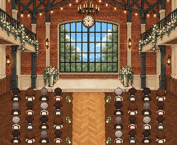
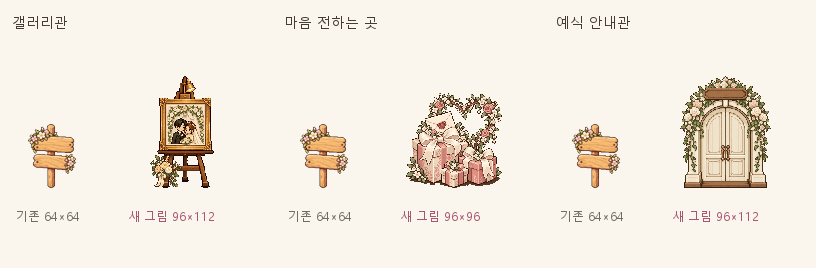
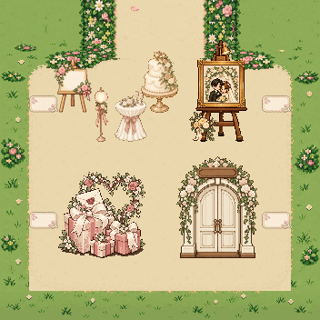
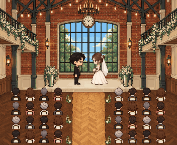
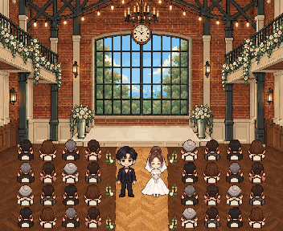
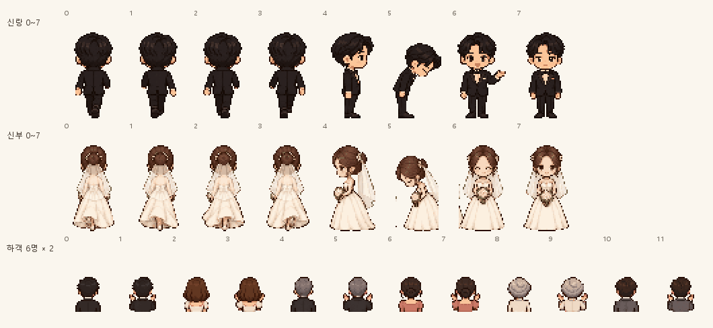
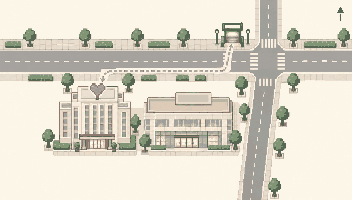

① 하객 착석

민우 & 새암 결혼식
지금부터 시작합니다!!
4줄 × 양쪽 4명. 머리와 뒷줄 등받이가 겹치지 않도록 실제 인물 높이26px, 등받이8px로 맞췄습니다.
새 그림과 배치 제안 모형입니다. 실제 앱 배치·충돌·예식 타임라인은 Claude 연결 전입니다. 모든 새 PNG는 별도 v1 파일이며 기존 그림은 보존했습니다.
일반형 청첩장 · 현재 픽셀 정원 · 규격·좌표·검증 기록


갤러리 중심 (240,668), 마음 전하기 (112,796), 예식 안내 (240,796). 미리보기 상단은 월드 y512입니다. 네 문·케이크와 새 그림의 불투명 픽셀이 겹치지 않습니다.
각 그림은 배경 → 하객·두 사람 → 앞쪽 등받이·꽃 순서입니다. 대사 상자는 캔버스 아래 DOM에 두어 얼굴을 가리지 않습니다. 내부 해상도 352×288, 모형 카드 폭390px.

민우 & 새암 결혼식
지금부터 시작합니다!!
4줄 × 양쪽 4명. 머리와 뒷줄 등받이가 겹치지 않도록 실제 인물 높이26px, 등받이8px로 맞췄습니다.

서로의 곁에서
같은 길을 걸어가겠습니다.
단상 윗면 y150~176. 두 사람 발 (154,168)·(198,168), 프레임4를 사용합니다. 프레임5는 맞절입니다.

새로운 시작을 축하해 주세요.
와 주셔서 감사합니다 ♥
정면은 기존 신랑·신부 그림입니다. 실제 걷기·꽃잎 타임라인은 Claude가 연결합니다.
그림을 불러오고 있어요.


을지로입구역 · 2호선을지로더그랜드롯데 서울출구 번호는 넣지 않았습니다. 주변 위치를 설명하는 약도이며 실제 길찾기는 지도 앱에서 안내합니다.